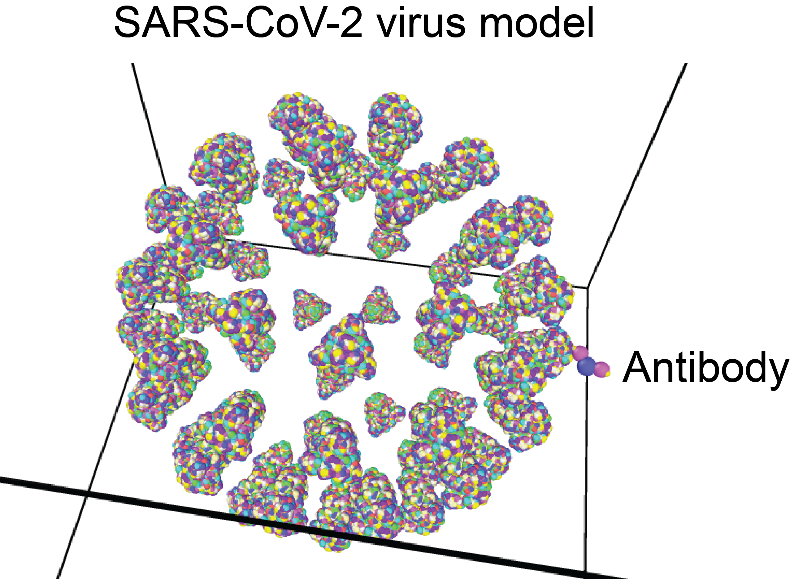

Viral infection elicits a humoral response and the production of antibodies with near-limitless diversity, which target residues on the surface of glycoproteins (spikes). Because of the high-density presentation of spikes on the viral surface, not all antigenic sites are targeted equally by antibodies. We used molecular dynamics simulation to estimate the ability of antibodies to target different surface residues of the SARS-CoV-2 spike.
Affinity map: antibody affinity (on-rate of the antiboy) or antibody pressure estimated from the simulation is superimposed on the spike structure.

Antibody targeting of the spike (S protein) of SARS-CoV-2
For circulating viruses to propagate, they have to evade neutralization and recognition by antibodies and do so, by accumulating mutations at their spikes. We checked for the sarbecovirus subgenus spike (SARS family) whether the mutational pattern matches the antibody pressure/affinity estimated by the model.
Mutability map: entropy of the sarbecovirus subgenus residues superimposed on the spike structure.
To compare the affinity map and the mutability map we applied spectral clustering. We aggregate residues to epitope clusters. The scatter plot shows how well the model does in explaining the mutability of the surface residue.
The correlation between the affinity map and the mutability map is 0.69 for the sarbecovirus subgenus spike. To create the affinity map and estimate antibody pressure on a residue, we use only the surface geometry of the virus and the spike. Hence, the virus surface geometry gives rise to antibody pressure, as estimated by the model, that can explain 48% of the variability in the mutability map of the sarbecovirus subgenus spike.
Does the mutational pattern of SARS-CoV-2 follow the simulatons?
We compared the mutability of the SARS-CoV-2 spike to the affinity map. Because over time the mutational patterns of the spike evolution can change, we explore its mutability map at different time periods. Choose below the initial time-point and the end time-point over which you want to compare the mutability map to the model. A high correlation value means that the mutability pattern of the spike follows antibody pressure as estimated by the model and could be indicative of escape from antibody mutations, amongst other factors (see manuscript).